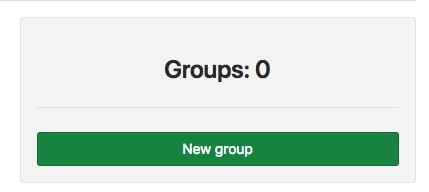
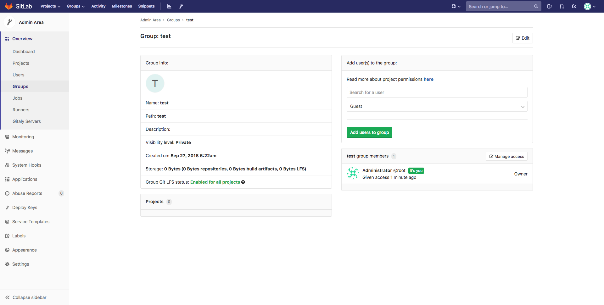
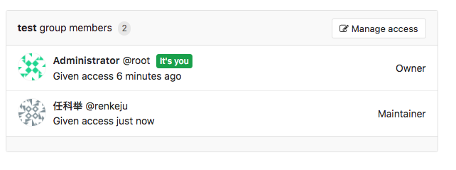
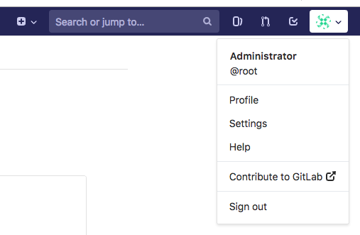

权限管理¶
使用 root 用户进入 Gitlab 服务首页，如下所示

点击导航栏中的 admin area 小扳手进入管理界面

创建用户¶
点击
New User按钮，创建新的用户。进入新建用户配置页面

配置选项
内容 选项 含义与作用 Account Name 账户名称 Username 用户名 Email 邮箱地址 Password Password 密码 Password confirmation 确认密码 Access Projects limit 项目限制 Can create group 是否能创建组 Access level Regular (普通用户) Access level Admin（管理员） External 除非明确授予访问权限，否则外部用户无法查看内部或私有项目。此外，外部用户无法创建项目或组。 Profile Acatar 头像 Skype Linkedin Twitter Website
创建组¶
为什么需要有组？比如公司现在有开发团队，有不同项目，可以按照不同项目来分配组，组内包含了不同的成员。
点击
New Group按钮，创建新的用户组。进入新建组配置页面

配置选项
选项 含义与作用 Group path 组项目 URL 路径 Group name 组项目名称 Description 组项目描述 Group avatar 组项目图标 Visibility Level Private（该组及其项目只能由成员查看） Internal（任何登录用户都可以查看该组和任何内部项目） Public（无需任何身份验证即可查看该组和任何公共项目） Allow users to request access（如果公开或内部可见性，则允许用户请求访问权限） Large File Storage 允许该组中的项目使用Git LFS Two-factor authentication 要求此组中的所有用户都设置双因素身份验证 组创建成功
组授权
组创建完成后，组内是没有用户的，创建组的用户就要赋权给其他的用户
选择用户加入组

设置用户在组中的角色

查看组成员

创建项目¶
点击
New project按钮，创建新的项目。
进入新建项目配置页面

选项配置
选项 含义与作用 Project name 项目名称 Project URL 项目URL Project slug 项目块 Project description 项目描述 Visibility Level Private（私有） Internal（内部） Public（公有） Initialize repository with a README、 初始化存储库的 README 文件
授权项目用户¶
给用户添加密钥
当我们创建完成了组、用户与项目之后，用户需要上传公钥，否则 SSH 协议不能使用。
点击页面右上方的用户头像
进入用户配置页面，查看左侧用户配置选项

点击
SSH keys，为用户添加 SSH 公钥
本地生成密钥对
用户本地主机生成密钥对
$ ssh-keygen -b 4096 -t rsa -f ~/.ssh/gitlab -N '' Generating public/private rsa key pair. Your identification has been saved in /Users/renkeju/.ssh/gitlab. Your public key has been saved in /Users/renkeju/.ssh/gitlab.pub. The key fingerprint is: SHA256:s427VY2KNaGXemMwu3ird02IK4/lo7OHCA7vLHfcAmI renkeju@laptop.local The key's randomart image is: +---[RSA 4096]----+ | | | | | . | | . o o | | S.=.o . | |oEo .&.+. | |.= + o .B.Bo | |..+ = ==**... | | +o. .*@B= | +----[SHA256]-----+
查看密钥对
$ ll .ssh/gitlab* -rw------- 1 renkeju staff 3.2K 9 27 15:46 .ssh/gitlab -rw-r--r-- 1 renkeju staff 746B 9 27 15:46 .ssh/gitlab.pub
复制公钥
$ cat .ssh/gitlab.pub ssh-rsa AAAAB3NzaC1yc2EAAAADAQABAAACAQDIAmL6Hgb1hyi8ErvF2kd0o4lYVwn8EecdyMBrSViOjj0FxFz5NBXVZgZziuKiYN9EBQt+cf+ehbUquLJY/w5S3Rg08x8QMKnJCtQ0vK8vmuO6ljUxHlBzyQiSs4dQWIwhAUL5hJ+BrAHp+PbPvuX7nwZILPCGLZTlMIBTWIQtUwdZQDQmWZ0xxsXlHoa0w4NNgUcJOgrFF2A0E4jrzAOdUKWQfhCSBXEd6BZJ+QGOcRmIL3fPasJL3+B8X5GNs56DpXeByXLGSwgU605bog9oU6N3WqHvoLa1LwwUmpfospEB1DimS/7a31nMPera026Hvr851QUUAxZGjpYxZodJ1QcscH4ZOgafFZnH+8UiU6LWreb4cj/o56i+TuKntOAlQNb6R0M9C4E3B5BQI8l6Ob5nkr7ltujDTJGtTFPlF0oBxEqgkpnvjkLicZ6biCDa3f2bEU7k5Ez/kyrA1w639gnfF58KzyZuuhM9HG1ANK4KO9LGr/5MMqjbkr8ksiqcNG17YSmdQVWqmLU5Ai2tEnA5KLjHwiv2MXrzpBe1elIUXW7AHps+Tx+e/Q56K3vfJ43adxh+E+cFDqPyjpsBWdc6m7Js7hXuQ2Z5iFSVfyh9YxwmJudHLTkhTZhJi18qjnPyNy9Q/WwKVRq0NWXfqcd3aWjvmNXLe7HAXfhi7Q== renkeju@laptop.local
配置公钥
将公钥黏贴到文本框内

已添加的公钥列表